📻 Catorweb Broadcaster
Manuale completo: come si usa, come creare una web radio e come registrare un podcast.
Una regia radio completa sul tuo PC Windows: libreria musicale, clockwheel, palinsesto, microfono, jingle, registrazione e diretta verso il tuo server di streaming.
1Benvenuto
Catorweb Broadcaster fa diventare il tuo computer una regia radiofonica. Scegli la musica, prepara il palinsesto, parli al microfono e mandi tutto in diretta su internet, dove gli ascoltatori ti sentono con un player, un'app o un sito.
Si usa dal browser (Edge, Chrome, Firefox): le pagine sembrano un sito, ma girano solo sul tuo PC. Insieme si apre una finestra nera: è il programma vero e proprio, il "motore" (dentro c'è Liquidsoap, il software audio usato da molte radio professionali).
Cosa ti serve
| Cosa | Note |
|---|---|
| PC con Windows 10 o 11 | Va bene un PC normale. Per trasmettere tante ore di fila è meglio un PC dedicato, sempre acceso. |
| La tua musica in MP3 | In una o più cartelle del PC o di un disco esterno. |
| Connessione internet | Per trasmettere a 128 kbps bastano 0,2 Mbit/s in upload; meglio averne almeno 1 stabile. Il cavo di rete è più affidabile del Wi-Fi. |
| Un server di streaming | Icecast, Shoutcast o un ingresso Liquidsoap, di solito a pagamento da un fornitore (vedi Creare una web radio). Non serve per iniziare: con 🎧 Prova la radio suona sul PC. |
| Microfono e cuffie | Facoltativi. Un microfono USB è il modo più semplice di iniziare. |
- Libreria: tutti i tuoi brani, divisi in categorie (Blues, Anni 70, Jingle…).
- Clockwheel: la "ricetta" che dice alla radio quali categorie suonare e in che ordine, così va avanti da sola.
- Scheduler: il palinsesto, cioè quale clockwheel usare a quale ora del giorno.
2Installare
- Fai doppio clic su
Setup_CatorwebBroadcaster.exe. - Scegli la lingua dell'installazione e segui i passaggi. Non servono permessi di amministratore: il programma si installa solo per il tuo utente.
- Alla fine trovi Catorweb Broadcaster sul Desktop e nel menu Start.
Aggiornare: installa il nuovo Setup sopra il vecchio. Impostazioni, libreria e registrazioni restano.
Disinstallare: dalle App di Windows. I tuoi dati (impostazioni, database, registrazioni) non vengono cancellati.
3Primo avvio e Impostazioni
Al primo avvio si apre la pagina Impostazioni. Più avanti la ritrovi con ⚙ Impostazioni, a destra delle schede.
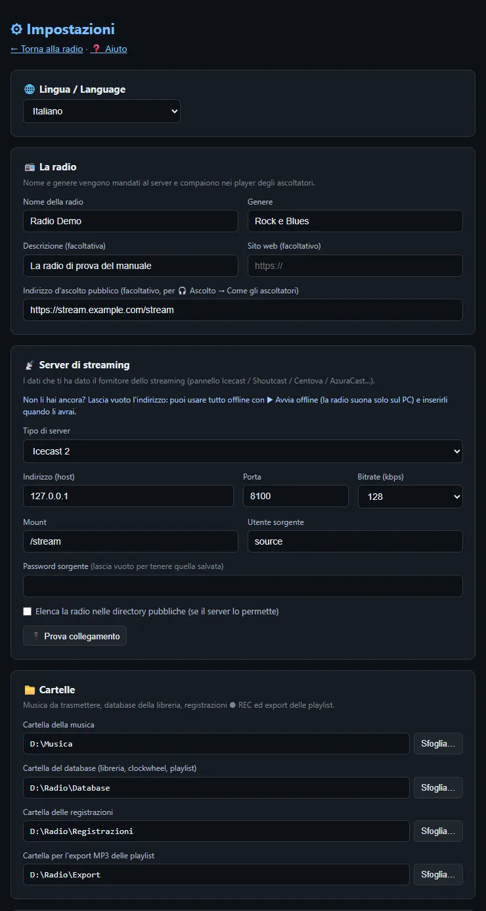
Lingua
Italiano o English: cambia tutta l'interfaccia. Al primo avvio è quella di Windows.
La radio
- Nome e genere: arrivano ai player degli ascoltatori. Il nome si usa anche per i file delle registrazioni.
- Descrizione e sito: facoltativi.
- Indirizzo d'ascolto pubblico: il link dello stream che usano gli ascoltatori (te lo dà il fornitore). Serve per 🎧 Ascolto → Come gli ascoltatori, con cui ti ascolti "da fuori".
Server di streaming
| Tipo | Cosa inserire |
|---|---|
| Icecast 2 | Indirizzo (host), porta, mount (es. /stream), utente (di solito source), password. |
| Shoutcast | Indirizzo e porta pubblica (l'app si collega da sola alla porta + 1), password. Per Shoutcast v2 con più stream: password:#1. |
| Liquidsoap (harbor) | Come Icecast; il mount è di solito /. |
Bitrate: 128 kbps è lo standard delle web radio musicali (buona qualità, poca banda per gli ascoltatori); 192 kbps se il tuo pubblico ascolta soprattutto da casa. 🔌 Prova collegamento controlla i dati senza andare in onda.
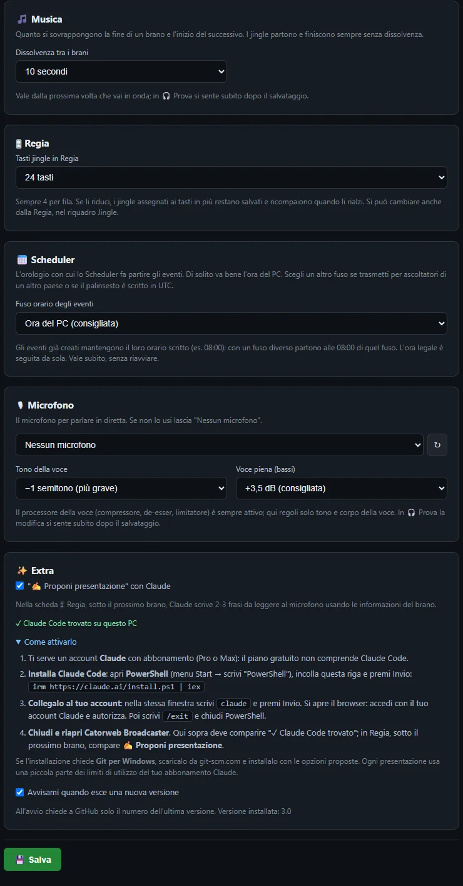
Cartelle
| Musica | Dove tieni la musica (puoi comunque importare da qualunque cartella). |
| Database | La libreria, i clockwheel e le playlist. Mettila in una cartella che salvi nei backup. |
| Registrazioni | Dove finiscono gli MP3 del ⏺ REC. |
| Export | Dove Tools copia gli MP3 delle playlist. |
Se cambi una cartella il programma si riavvia da solo (non durante una diretta).
Microfono
Scegli il microfono dall'elenco (↻ aggiorna l'elenco se l'hai appena collegato). Tono della voce (−2…+2 semitoni) e voce piena (bassi, consigliato +3,5 dB) regolano il processore della voce, che comprime, toglie le sibilanti e limita i picchi.
Extra
- Proponi presentazione con Claude: in Regia Claude scrive 2-3 frasi da leggere al microfono (vedi Regia). Per attivarlo:
- serve un account Claude con abbonamento Pro o Max;
- apri PowerShell (menu Start → "PowerShell"), incolla
irm https://claude.ai/install.ps1 | iexe premi Invio; - scrivi
claudee premi Invio: nel browser accedi con il tuo account Claude e autorizza, poi scrivi/exit; - chiudi e riapri Catorweb Broadcaster: in Impostazioni compare "✓ Claude Code trovato".
4La tua radio in 10 minuti
Il percorso più breve per sentire la tua radio suonare, anche senza server.
- Impostazioni: nome della radio, cartelle, eventualmente il microfono. Salva.
- Libreria → ⬆ Import → 📁 Cartella: 📂 Sfoglia…, scegli una cartella di musica, lascia "crea automaticamente" e premi ⬇ Importa. Ripeti per 2-3 cartelle di generi diversi: ognuna diventa una categoria.
- Clockwheel → + Nuovo: aggiungi gli slot, per esempio Jingle, Rock, Blues, Rock, Jingle, Anni 70. Salva e premi ⚡ Attiva.
- In alto premi 🎧 Prova, poi 🎧 Ascolto → Tutto per ascoltare. La radio suona da sola!
- Apri 🎛 Regia, accendi il microfono con la barra spaziatrice e fai il tuo primo intervento.
- Quando hai i dati del server: Impostazioni → server → 🔌 Prova collegamento, poi ⚪ FUORI ONDA — Vai in onda.
5La schermata
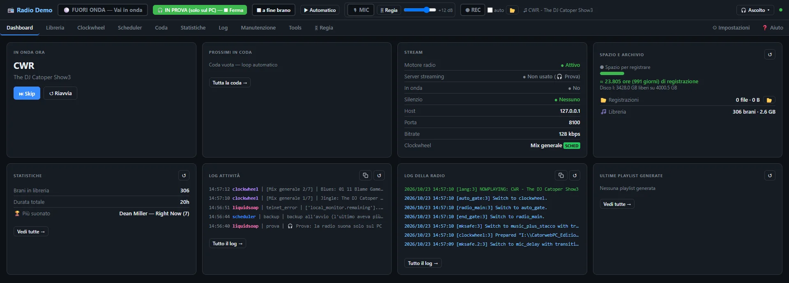
La barra in alto
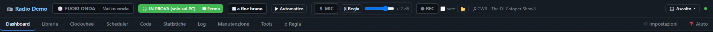
| Comando | A cosa serve |
|---|---|
| ⚪ FUORI ONDA — Vai in onda | Va in diretta (chiede conferma). In onda diventa 🔴 IN ONDA — Chiudi diretta. |
| 🎧 Prova | La radio suona solo sul PC, senza mandare niente al server. |
| ⏹ a fine brano | In onda: chiude la diretta quando finisce il brano in corso. |
| ▶ Automatico / ✋ Manuale | Come partono i brani: da soli o solo quando premi AVVIA (vedi Regia). |
| Riquadro 🎙 MIC | Microfono, modo di abbassare la musica, volume della voce. |
| ⏺ REC · auto · 📂 | Registrazione di quello che va in onda. |
| 🎧 Ascolto ▾ | Ascolto in cuffia, tre modi (vedi Ascoltare). |
| Pallino a destra | Verde = il motore audio è attivo. |
Sotto ci sono le schede: Dashboard, Libreria, Clockwheel, Scheduler, Coda, Statistiche, Log, Manutenzione, Tools, 🎛 Regia. A destra ⚙ Impostazioni e ❓ Aiuto (la guida rapida dentro l'app).
📌 Bacheca dei promemoria
Il pulsante tondo 📌 in basso a destra apre una piccola bacheca: scrivi una nota ("chiamare l'ospite di venerdì", "rinnovare il server il 30") e premi Invio. ✓ la segna come fatta (diventa barrata e scende in fondo), ✎ la modifica, 🗑 la cancella. Il numero rosso sul pulsante dice quanti promemoria sono ancora da fare. Le note restano salvate nel database, anche chiudendo il programma.
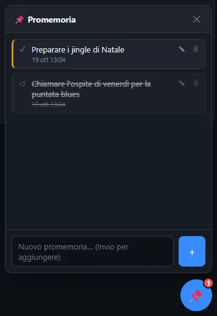
6Libreria e import
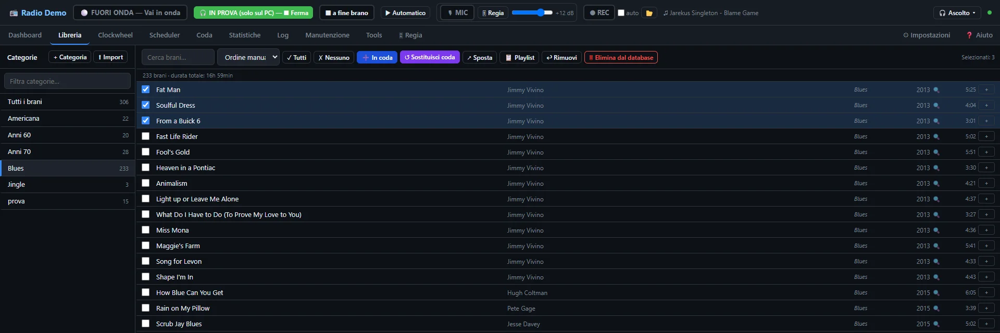
Le categorie sono cartelle "virtuali": un brano può stare in più categorie senza duplicare il file.
- Cerca e ordina (artista, titolo, genere, durata, anno, data di inserimento, casuale, ordine manuale trascinando).
- Seleziona i brani con le caselle (o ✓ Tutti) e poi: ➕ In coda li aggiunge in fondo alla coda, ↺ Sostituisci coda svuota la coda e ci mette quelli selezionati, ↗ Sposta li copia o sposta in un'altra categoria, ↩ Rimuovi li toglie dalla categoria (restano in libreria), 🗑 Elimina dal database li toglie dalla libreria, da tutte le categorie, dalla coda e dai pulsanti jingle (i file restano sul disco), 💾 Salva M3U salva una playlist.
- + Cat crea una categoria. Passando il mouse su una categoria: +sub sottocategoria, ✎ rinomina, ✕ elimina (puoi eliminare solo la categoria, oppure anche tutti i suoi brani dal database, pure se sono in altre categorie; i file restano sul disco). Trascina dei brani su una categoria per copiarli lì.
- 📊 Stats: decenni, generi e anni della categoria.
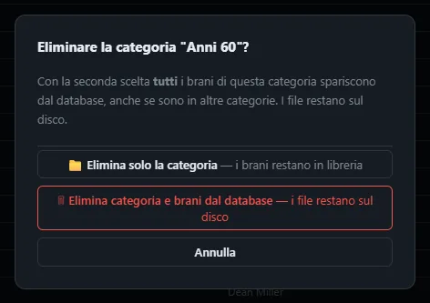
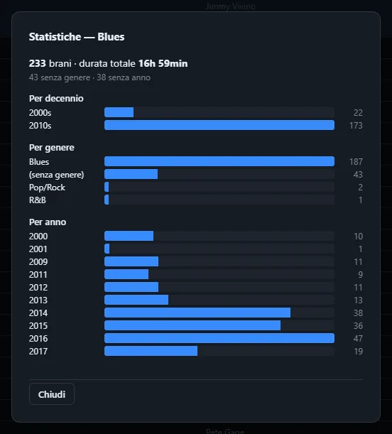
Importare
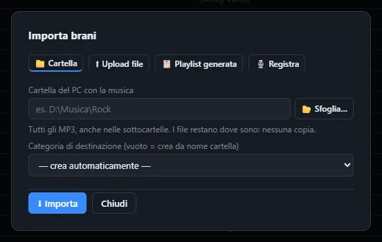
| Scheda | Cosa fa | Copia i file? |
|---|---|---|
| 📁 Cartella | Tutti gli MP3 di una cartella e delle sottocartelle, in una categoria (vuota = col nome della cartella). | No, restano dove sono |
| 📋 Playlist generata | Una playlist dell'app o una tua M3U (📂 Scegli file M3U…). | No |
| ⬆ Upload file | Trascini dei file, per esempio da una chiavetta. | Sì, in musica\importati |
| 🎙️ Registra | Registri un parlato (voice track, intro, promo) con taglio, bassi/alti e compressore. | File nuovo in musica\registrazioni |
Con più di 200 file l'app chiede conferma prima di importare: è solo un avviso, puoi importare anche migliaia di brani.
7Tag Editor ed embargo
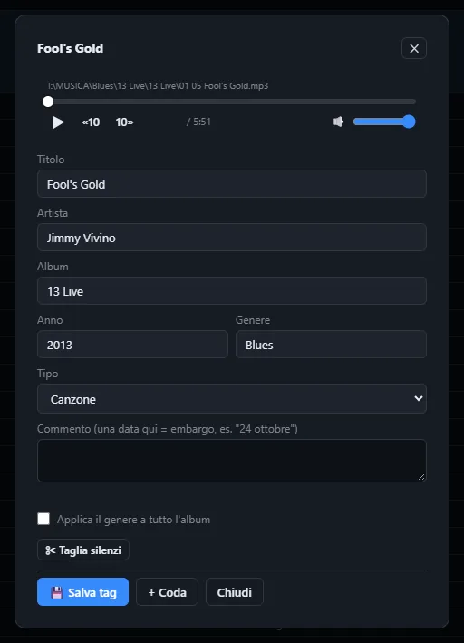
Con l'anteprima ascolti il brano («10 10» per saltare). Puoi correggere titolo, artista, album, anno, genere e il tipo (canzone, jingle, intro, voice track…).
- Applica il genere a tutto l'album: comodo per sistemare i generi in fretta.
- ✂ Taglia silenzi: toglie i silenzi a inizio e fine file (l'originale resta come copia di sicurezza).
- + Coda: mette il brano in coda.
Embargo
Scrivi una data nel campo Commento (es. 24 ottobre, 24/10, 24/10/2026): il brano è sotto embargo fino a quel giorno compreso. Non viene scelto dal clockwheel, non entra in coda, playlist o scheduler e non si esporta. In libreria compare 🔒 con la data. Dal giorno dopo è libero da solo.
8Jingle e categorie speciali
Il nome della categoria decide come vanno in onda i brani che contiene:
| Se il nome contiene… | I brani diventano | Effetto |
|---|---|---|
| jingle, sweeper, liner, station id, imaging | Jingle | Niente dissolvenze (fade) e niente crossfade: partono e finiscono "secchi", come devono. |
| intro, promo, news, spot, voice track | Intro, promo, news, spot, voice track | |
| qualunque altro nome | Canzoni | Crossfade morbido tra un brano e l'altro. |
I jingle non vengono mai cercati online e non hanno la scheda del brano. Nella Regia hai anche 8 pulsanti jingle da lanciare a mano (vedi Regia).
- Station ID (3-10 s): "Stai ascoltando Radio Demo". Il più importante: ogni 15-20 minuti.
- Sweeper (5-15 s): effetto + frase, tra due canzoni.
- Jingle cantato: il "marchio" musicale della radio.
- Intro di programma e promo dei tuoi appuntamenti.
9Coda e playlist
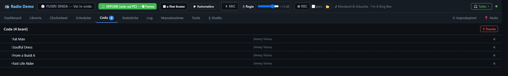
I brani in coda partono prima del clockwheel, nell'ordine. Quando la coda è vuota la radio continua con il clockwheel attivo. 🗑 Svuota la cancella, ✕ toglie un brano.
Le playlist salvate (M3U) si aggiungono alla coda dalla Dashboard con ➕ Aggiungi o 🔁 Sostituisci, oppure a orario con lo Scheduler.
10Clockwheel
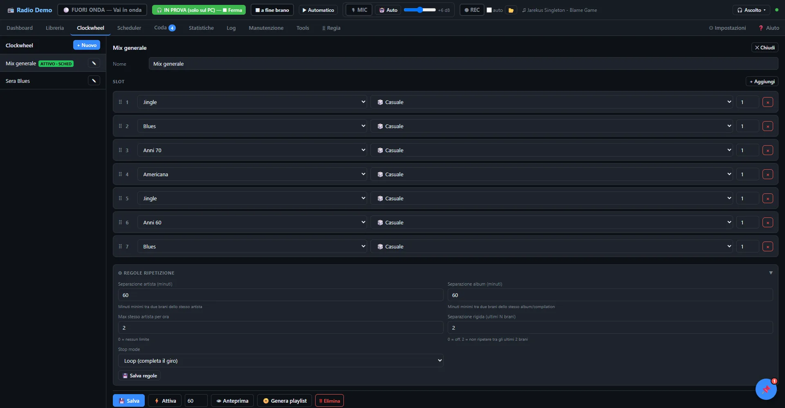
Un clockwheel è una ruota di slot: ogni slot pesca un brano (o più) da una categoria. Finito l'ultimo slot si ricomincia dal primo. È il "formato" della tua radio.
Gli slot
- Categoria da cui pescare.
- Modalità: Casuale con regole, brano da più tempo non suonato, suonato più di recente, artista da più tempo non suonato…
- Quanti brani per slot.
- Trascina ⠿ per cambiare l'ordine, + Aggiungi per uno slot nuovo.
Regole di ripetizione
| Separazione artista (minuti) | Tempo minimo tra due brani dello stesso artista. 60 è un buon inizio. |
| Separazione album (minuti) | Lo stesso per gli album e le compilation. |
| Max stesso artista per ora | 0 = nessun limite. |
| Separazione rigida | Non ripetere un brano tra gli ultimi N. |
| Stop mode | Per le playlist generate: Loop (completa il giro), Exact (durata esatta), Over (primo sforamento). |
I pulsanti
💾 Salva · ⚡ Attiva lo forza subito (ha la precedenza sullo scheduler; un avviso in alto lo ricorda, ✖ Libera lo toglie) · 👁 Anteprima mostra cosa suonerebbe · 📀 Genera playlist crea una playlist della durata scelta (minuti).
- Station ID (categoria Jingle)
- Canzone "forte" (la tua categoria più amata)
- Canzone recente
- Canzone "gold" (classico)
- Sweeper (Jingle)
- Canzone forte
- Canzone di un'altra categoria per variare
11Scheduler e palinsesto
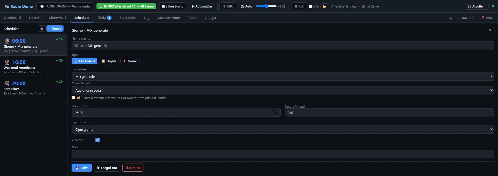
Lo Scheduler esegue eventi a orario (ora del PC). Ogni evento ha nome, ora d'inizio, durata, ripetizione (ogni giorno, giorni scelti, una volta sola) e un tipo:
- Clockwheel: in quella fascia la radio usa quel clockwheel. È il modo di costruire il palinsesto.
- Playlist: aggiunge o sostituisce la coda con una playlist.
- Azione: salta il brano, svuota la coda, mette in coda una categoria o un brano, sposta brani tra categorie, cambia il clockwheel di default, fa il backup del database…
▶ Esegui ora prova subito un evento. Il pulsante 🗓 mostra la timeline della settimana:
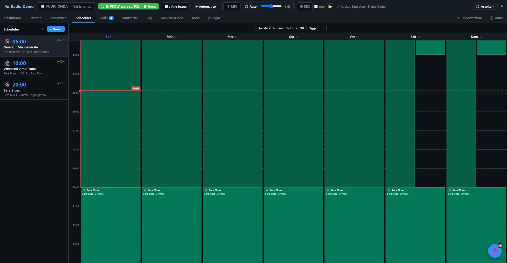
| 06:00–20:00 | Clockwheel "Giorno" (musica varia) |
| 20:00–24:00 | Clockwheel "Sera" (genere più specifico) |
| Sab e Dom 10:00 | Programma speciale (playlist o clockwheel dedicato) |
| 04:00 ogni giorno | Azione "Backup del database" |
12Andare in onda e 🎧 Prova
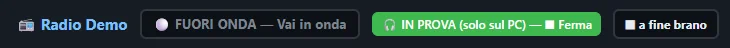
🎧 Prova: la radio solo sul PC
La radio funziona in tutto (coda, clockwheel, jingle, microfono, regia) ma al server non arriva niente. Ascolta con 🎧 Ascolto. Serve per:
- provare un clockwheel o un programma nuovo;
- scaldare la voce e regolare il microfono;
- registrare un podcast (vedi Fare un podcast);
- usare l'app prima di avere un server.
Premendo Vai in onda durante la Prova, il server si collega senza fermare la musica: il brano che stai ascoltando va in onda così com'è.
In diretta
- Premi ⚪ FUORI ONDA — Vai in onda e conferma.
- Il pulsante diventa 🟠 Collegamento al server… e poi 🔴 IN ONDA.
- La diretta parte dal primo brano in coda o, se è vuota, dal clockwheel.
Per chiudere: 🔴 IN ONDA — Chiudi diretta, oppure ⏹ a fine brano per chiudere senza tagliare la canzone (si può annullare).
- Prova collegamento riuscita (Impostazioni).
- Coda o clockwheel pronti; scheduler controllato nella timeline.
- Microfono giusto, volume voce provato in Prova.
- Cuffie collegate al PC (non al microfono USB) su 🎧 Ascolto → Solo musica.
- ⏺ REC "auto" acceso se vuoi l'archivio della puntata.
- Notifiche di Windows e programmi pesanti chiusi.
Finché Catorweb Broadcaster è aperto, Windows non va in sospensione (ma il coperchio chiuso di un portatile lo sospende comunque).
13🎛 Regia
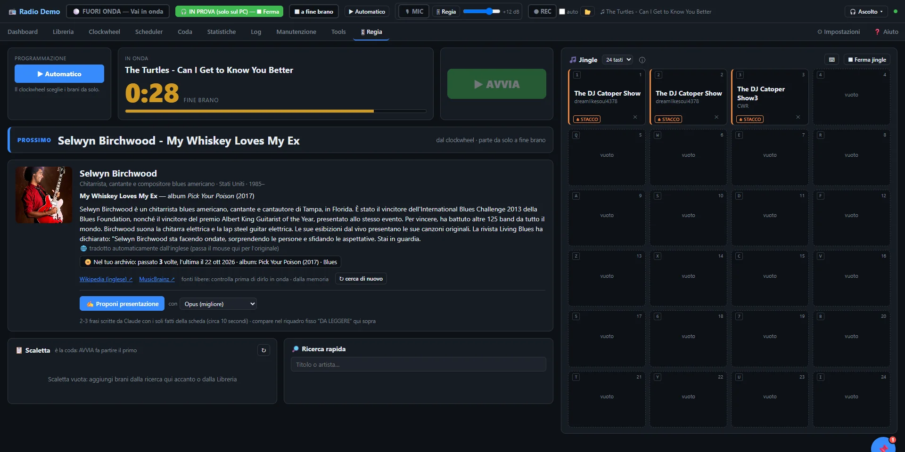
È la scheda per condurre. In alto il grande conto alla rovescia della fine del brano (la barra diventa arancione negli ultimi 30 secondi e rossa lampeggiante negli ultimi 10) e la fascia PROSSIMO.
▶ Automatico e ✋ Manuale
- Automatico: coda + clockwheel, tutto parte da solo.
- Manuale: alla fine del brano in corso la radio si ferma e aspetta ▶ AVVIA. Premere AVVIA mentre un brano suona passa subito al prossimo. È il modo per parlare quanto vuoi tra un brano e l'altro.
"Chiudi diretta" rimette sempre Automatico per la volta dopo.
Scaletta e ricerca rapida
La scaletta è la coda: cerca un brano a destra, + Scaletta lo aggiunge, ✕ lo toglie.
Scheda del brano
Sotto PROSSIMO compare la scheda del prossimo brano: foto e biografia dell'artista (Wikipedia), album e anno (MusicBrainz, iTunes), quante volte l'hai passato e quando. Serve internet; le schede restano in memoria 30 giorni, ↻ cerca di nuovo le aggiorna.
✍ Proponi presentazione (facoltativa)
Se sul PC c'è Claude Code collegato al tuo account, Claude scrive 2-3 frasi da leggere al microfono usando solo i fatti della scheda. Scegli Opus (scrive meglio) o Sonnet (consuma meno). Il testo compare nel riquadro 🎙 DA LEGGERE.
Pulsanti jingle
8 pulsanti: assegnali dalla ricerca con 🎵, un clic li fa partire, ⏹ Ferma jingle li ferma. Funzionano anche in Automatico. Ogni pulsante ha il suo modo (clic sull'etichetta in basso):
| ≋ SOPRA | Il jingle suona sopra la musica, che si abbassa. Per effetti brevi, applausi, risate. |
| ⏏ STACCO | La musica sfuma in ~1 s e il jingle suona da solo; poi in Automatico riparte il brano successivo, in Manuale silenzio fino ad AVVIA. |
14🎙 Microfono
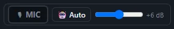
- 🎙 MIC: clic = acceso/spento (rosso = acceso).
- Barra spaziatrice tenuta premuta: parli finché la tieni (non mentre scrivi in un campo).
- Cursore: volume della voce in onda, da −6 a +18 dB.
🤖 Auto o 🎚 Regia: quando si abbassa la musica
| Modo | Come funziona | Per chi |
|---|---|---|
| 🤖 Auto (di base) | La musica scende solo mentre parli davvero e risale circa 1 s dopo l'ultima parola. Il microfono può restare acceso. | Chi parla spesso sopra la musica, interviste. |
| 🎚 Regia | Tieni premuta la barra spaziatrice: la musica scende subito e risale quando la lasci, come il fader di un mixer. | Chi vuole decidere ogni intervento. |
- Un microfono dinamico USB prende meno rumori della stanza di uno a condensatore.
- Bocca a 10-15 cm, leggermente di lato; un antipop (filtro di stoffa) evita i "p" esplosivi.
- Stanza con tende, tappeti, libri: meno rimbombo. Evita stanze vuote e bagni.
- Regola il volume in Prova: la voce deve stare un po' sopra la musica, non sparare.
- Tono e "voce piena" in Impostazioni: cambia poco alla volta e riascoltati con una registrazione.
15⏺ Registrazione
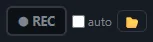
- ⏺ REC: clic = avvia (rosso, con il tempo), clic = ferma. Funziona in onda e in Prova.
- auto: registra da sola ogni diretta, da "Vai in onda" a "Chiudi diretta" (in Prova parte solo a mano).
- 📂 apre la cartella delle registrazioni.
Ogni registrazione crea due MP3:
NomeRadio_AAAA-MM-GG_hh-mm-ss.mp3 | Esattamente quello che va in onda (musica + voce), 192 kbps, circa 85 MB all'ora. |
…_voce.mp3 | Solo la tua voce: utilissima per il montaggio di un podcast. |
Nella Dashboard il riquadro Spazio e archivio dice quante ore di registrazione stanno ancora sul disco (circa 144 MB per ogni ora, contando anche il file della voce), quanto occupano le registrazioni e la libreria. Sotto le 24 ore diventa arancione, sotto le 3 rosso; se stai registrando compare anche un avviso in alto.
16Ascoltare in cuffia
Il pulsante 🎧 Ascolto ▾ in alto apre un menu con i tre modi di ascolto, ognuno spiegato. Ne suona uno alla volta e il pulsante mostra quale è acceso.
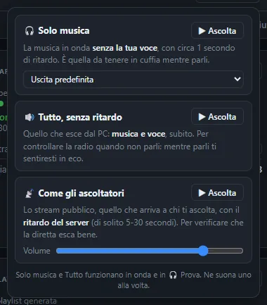
| 🎧 Ascolto → | Cosa senti | Quando usarlo |
|---|---|---|
| 🔊 Tutto, senza ritardo | Quello che esce dal PC (musica + voce), senza ritardo. | Controllare la radio. Non mentre parli: ti sentiresti in eco. |
| 🎧 Solo musica + uscita | Solo la musica, senza la tua voce, ~1 s di ritardo. | In cuffia mentre conduci. Scegli l'uscita delle cuffie collegate al PC. |
| 📡 Come gli ascoltatori | Lo stream pubblico, con il ritardo del server (5-30 s). | Verificare cosa sentono gli ascoltatori. Funziona se in Impostazioni c'è l'indirizzo d'ascolto. |
17Statistiche, Manutenzione, Tools
Statistiche
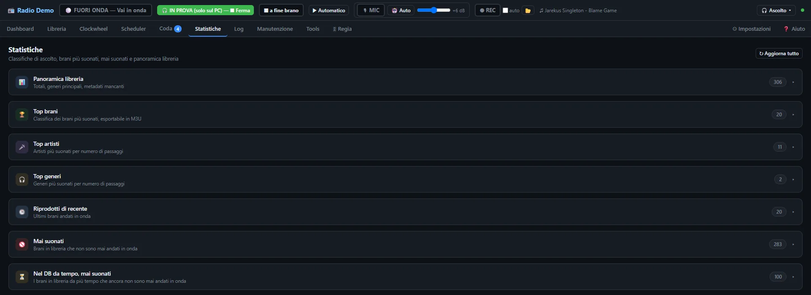
Panoramica della libreria, top brani (esportabili in M3U, anche come countdown per una classifica), top artisti e generi, riprodotti di recente, mai suonati, "nel database da tempo ma mai suonati" (perfetti per riscoprire brani dimenticati).
Manutenzione
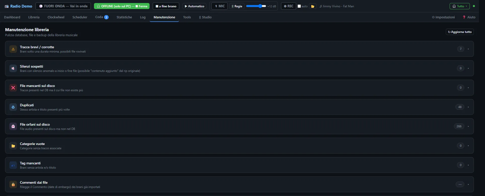
- Tracce brevi / corrotte e Silenzi sospetti a inizio o fine file.
- File mancanti (nel database ma non più sul disco) e File orfani (sul disco ma non nel database).
- Duplicati (stesso artista e titolo), Categorie vuote, Tag mancanti (con deduzione di artista/titolo dal nome del file).
- Backup & Restore del database.
Tools
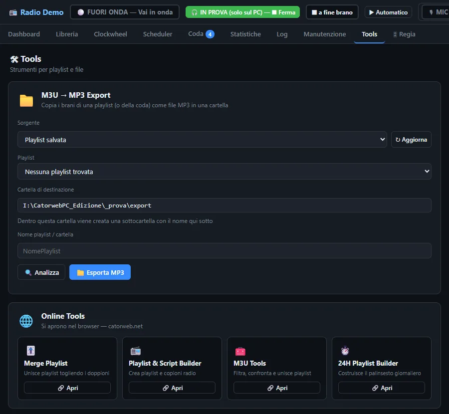
M3U → MP3 Export copia in una cartella i brani di una playlist o della coda (per una chiavetta, un DJ set, un backup). Online Tools apre strumenti per le playlist su catorweb.net.
La scheda Log mostra cosa succede nell'app e nel motore audio; 📋 Copia per mandarlo a chi ti aiuta.
18Dati, backup, aggiornamenti
%APPDATA%\CatorwebPC\config.json | Impostazioni |
%APPDATA%\CatorwebPC\data\ | Log, stato, palinsesto, backup automatici |
| Cartella Database (Impostazioni) | Libreria, clockwheel, playlist |
| Cartella Registrazioni | Gli MP3 del REC |
Per aprire %APPDATA% incollalo nella barra degli indirizzi di Esplora file.
- Nello Scheduler, un'azione "Backup del database" ogni notte.
- Copia ogni tanto su un disco esterno o nel cloud la cartella Database e
%APPDATA%\CatorwebPC. - Prima di grandi pulizie in Manutenzione: Backup & Restore → Crea backup.
Il programma usa le porte 8767, 8001 e 1235 solo dentro il PC: non serve aprire niente sul router.
19Problemi frequenti
Non va in onda / resta "Non collegato"
Impostazioni → 🔌 Prova collegamento: il messaggio dice il motivo (indirizzo o porta sbagliati, password o mount rifiutati, server spento). Con Shoutcast metti la porta pubblica. Guarda anche la scheda Log.
La musica resta bassa con il microfono acceso
Sei in 🎚 Regia e hai acceso il microfono con 🎙 MIC: in Regia si parla tenendo premuta la barra spaziatrice. Se vuoi lasciarlo acceso passa a 🤖 Auto.
Il microfono non si sente
Controlla in Impostazioni che sia scelto quello giusto (↻ aggiorna l'elenco). Funziona solo in onda o in Prova.
Mi sento in eco
Stai ascoltando 🎧 Ascolto → Tutto mentre parli: usa Solo musica.
"SILENZIO RILEVATO"
In onda non arriva audio da più di 20 secondi. Il motore si riavvia da solo; se resta, chiudi e riapri la diretta. In Manuale il silenzio tra un brano e l'altro è normale.
Un brano non parte / "File non trovato"
Il file è stato spostato o rinominato: Manutenzione → File mancanti.
"Catorweb Broadcaster è già aperto"
Il programma è già acceso: usa la finestra aperta, oppure chiudila e riapri l'icona.
La scheda del brano è vuota
Serve internet e l'artista nei tag.
20Guida: creare una web radio
1. L'idea
Prima della tecnica viene il formato: che musica, per chi, con quale tono. Una radio "di tutto un po'" è difficile da far conoscere; una radio con un'identità chiara (blues e roots, rock italiano anni 70, indie emergente…) si ricorda e si consiglia.
- Scegli un nome breve, facile da dire e da scrivere; controlla che il dominio e i social siano liberi.
- Scrivi in una riga chi sei: "La radio del blues, dalle radici a oggi".
2. I diritti della musica
3. Il server di streaming
Il tuo PC manda un solo flusso al server; è il server che lo moltiplica per tutti gli ascoltatori. Si noleggia da un fornitore (cerca "Shoutcast hosting" o "Icecast hosting"):
- Ascoltatori contemporanei (slot): per iniziare ne bastano 25-100.
- Bitrate: 128 kbps MP3 va benissimo.
- Quasi tutti includono un pannello (Centova, AzuraCast, Everest…) con le statistiche e il link d'ascolto.
- Ti daranno: indirizzo, porta, mount (Icecast), password. Sono i dati da mettere in Impostazioni.
4. Farsi trovare
- Un sito o una pagina con un player (il fornitore spesso ne dà uno pronto).
- Iscrivi la radio alle directory: TuneIn, Radio.net, Radio Garden, Streema, le app di radio online… Più directory = più ascoltatori casuali.
- Social: annuncia i programmi in diretta, pubblica estratti, chiedi richieste.
5. Il suono e l'identità
- Imaging: station ID ogni 15-20 minuti, sweeper tra i brani, jingle per i programmi (vedi Jingle).
- Tag puliti: titolo e artista corretti compaiono nei player degli ascoltatori.
- I livelli dei brani vengono uniformati automaticamente, ma evita file di qualità troppo bassa (sotto 128 kbps).
6. Il palinsesto
- Parti con 2-3 clockwheel (giorno, sera, weekend) e uno scheduler semplice.
- Aggiungi appuntamenti fissi: lo stesso programma, lo stesso giorno, alla stessa ora. Gli ascoltatori tornano per le abitudini.
- Un programma in diretta a settimana fa più di dieci ore di sola musica.
7. Trasmettere 24 ore su 24
- Un PC dedicato, con il cavo di rete e magari un piccolo gruppo di continuità (UPS).
- Imposta gli orari di attività di Windows Update, così non riavvia il PC mentre trasmetti.
- Controlla ogni tanto Manutenzione (file mancanti, duplicati) e le Statistiche (mai suonati).
21Guida: fare un podcast
Catorweb Broadcaster è perfetto per i podcast "stile radio": voce, musica e jingle in un'unica registrazione, come un programma vero.
La ricetta
- Prepara la scaletta nella Regia (coda) e metti ✋ Manuale, così decidi tu quando parte ogni brano.
- Premi 🎧 Prova: niente va su internet.
- Premi ⏺ REC.
- Conduci: sigla (jingle a STACCO), introduzione, brani con ▶ AVVIA, interventi con la barra spaziatrice.
- Ferma il ⏺ REC. Con 📂 trovi due file: la puntata completa e la sola voce.
Montaggio (facoltativo)
Per tagliare un errore usa un editor gratuito come Audacity. Il file _voce.mp3 ti permette di sistemare il parlato separatamente dalla musica. Per l'ascolto in cuffia e in auto, punta a un volume medio di circa −16 LUFS (lo standard di Apple Podcasts e Spotify); in Audacity c'è "Normalizzazione volume".
Dove pubblicare
| Tipo di puntata | Dove |
|---|---|
| Con musica commerciale | Mixcloud: ha accordi con le società dei diritti per i programmi musicali. Regole principali (verifica quelle attuali): inserisci la tracklist con i tempi, non troppi brani dello stesso artista o album in una puntata, nessun download per gli ascoltatori. |
| Solo parlato, o musica libera / tua | Un servizio di hosting podcast (Spreaker, RSS.com, Spotify for Creators…): crea il feed RSS e lo distribuisce a Spotify, Apple Podcasts, Amazon Music, YouTube. |
Consigli per le puntate
- Struttura fissa: sigla → saluto e tema → blocchi (2-3 brani + intervento) → saluti e prossima puntata.
- Durata costante e uscita regolare (ogni settimana lo stesso giorno).
- Una copertina quadrata (3000×3000 px) leggibile anche piccola.
- Titoli che dicono il contenuto: "Blues di Chicago: da Muddy Waters a oggi" più di "Puntata 12".
- Prima di registrare, un minuto di prova in REC per controllare voce e livelli.
22Consigli per usare al meglio l'app
📚 Libreria
- Organizza le categorie per ruolo in onda (forti, recenti, classici, notturni) più che per cartella.
- Sistema i generi con "Applica il genere a tutto l'album".
- Usa l'embargo per le uscite future.
- Una volta al mese: Manutenzione → File mancanti e Duplicati.
🎡 Clockwheel
- Slot con categorie grandi più spesso, piccole più di rado.
- Separazione artista 60 minuti come base.
- Prova sempre con 👁 Anteprima o in Prova.
- Un jingle ogni 3-4 brani mantiene l'identità.
🎛 In diretta
- Guarda il conto alla rovescia: parla sull'intro o sulla coda dei brani, non a metà.
- Prepara la scaletta prima, con la ricerca rapida.
- Usa ✋ Manuale per i programmi parlati, ▶ Automatico per il resto.
- ⏹ a fine brano per chiudere con eleganza.
🛡 Sicurezza
- Backup notturno con lo Scheduler.
- Prima di cambiare tutto: Crea backup.
- Non chiudere la finestra nera durante la diretta.
- Ogni tanto dai un'occhiata alla scheda Log.
23Glossario
| Bitrate | Quantità di dati al secondo dello stream (kbps): più alto = più qualità e più banda. |
| Clockwheel | Sequenza di slot che decide l'ordine delle categorie in onda. |
| Crossfade | Dissolvenza incrociata tra la fine di un brano e l'inizio del successivo. |
| Ducking | Abbassamento automatico della musica quando parli. |
| Embargo | Blocco di un brano fino a una data. |
| Icecast / Shoutcast | I due tipi di server di streaming più diffusi. |
| Imaging | L'insieme di jingle, station ID e sweeper che danno identità alla radio. |
| LUFS | Unità di misura del volume percepito, usata per podcast e streaming. |
| Mount | Il "nome" dello stream sul server Icecast (es. /stream). |
| Palinsesto | Il programma della giornata/settimana: cosa va in onda e quando. |
| Prova | La radio funziona solo sul PC, senza trasmettere. |
| Slot | Una posizione del clockwheel: una categoria e quanti brani prendere. |
| Station ID | Breve identificazione: "Stai ascoltando…". |
| Sweeper | Breve effetto con voce tra due brani. |
| Voice track | Un intervento parlato registrato prima e messo in scaletta. |
Catorweb Broadcaster · manuale per la versione 2.11. La guida rapida è anche dentro l'app: ❓ Aiuto.